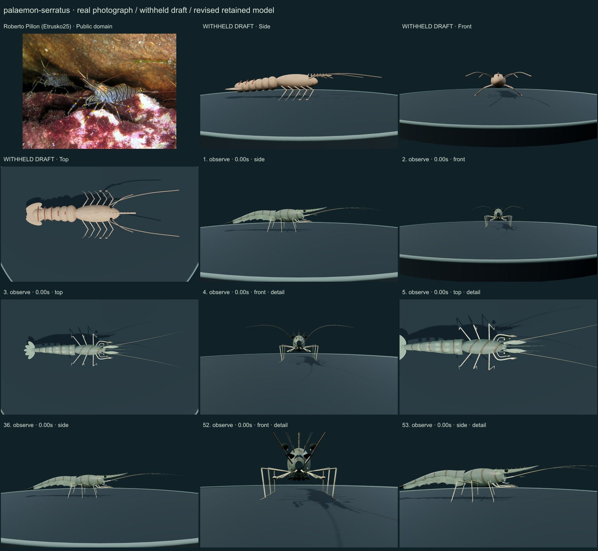
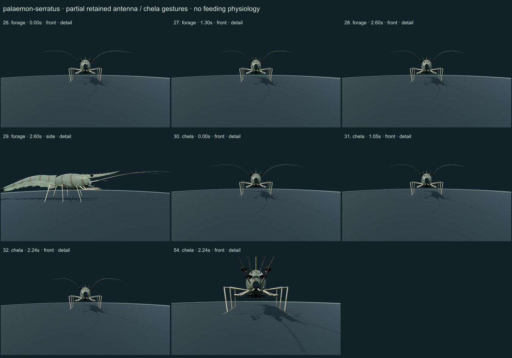
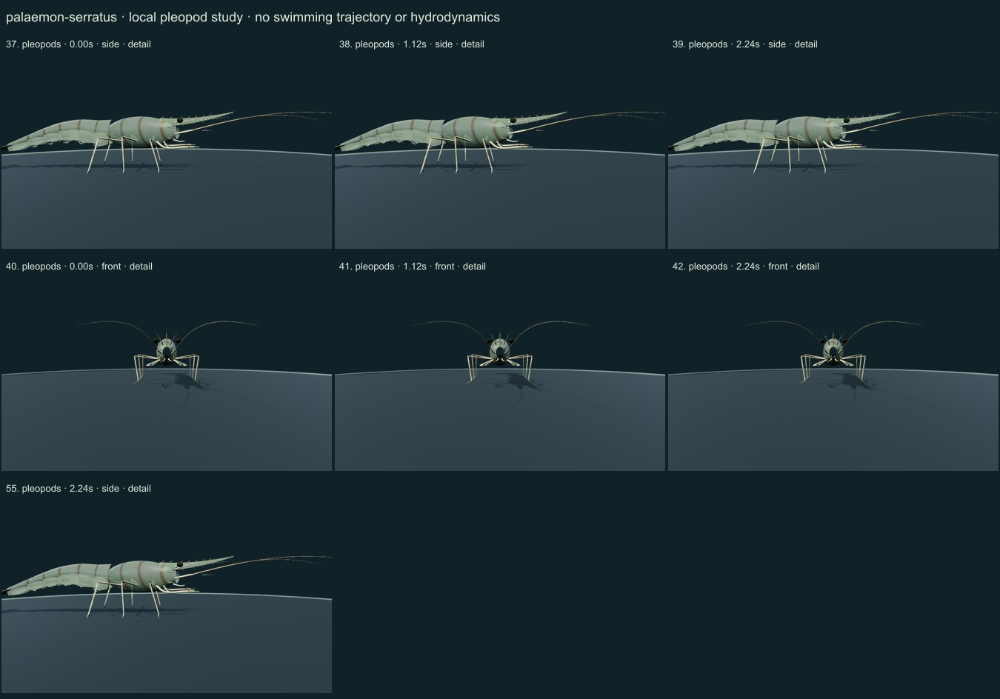
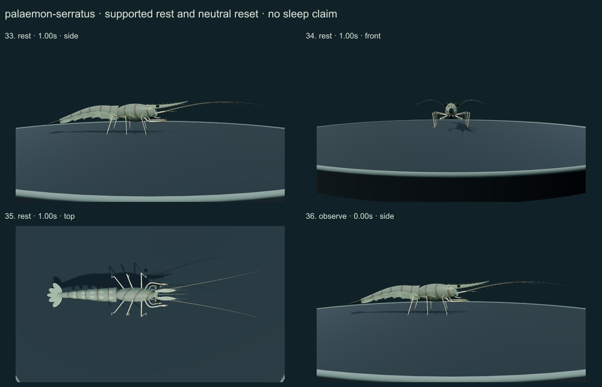
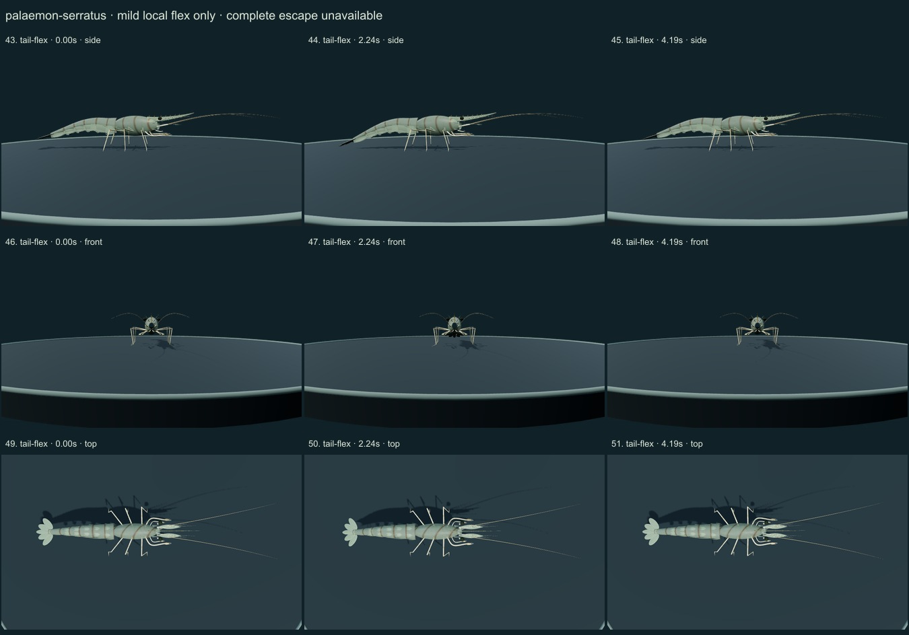
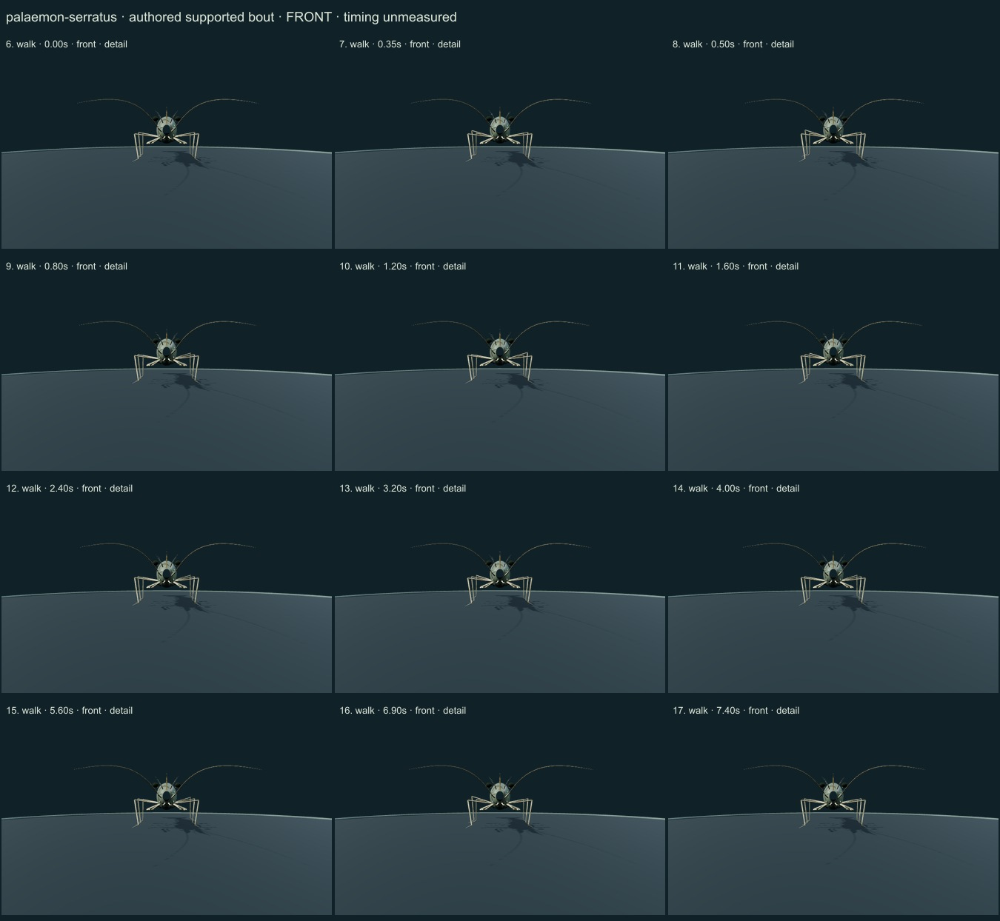
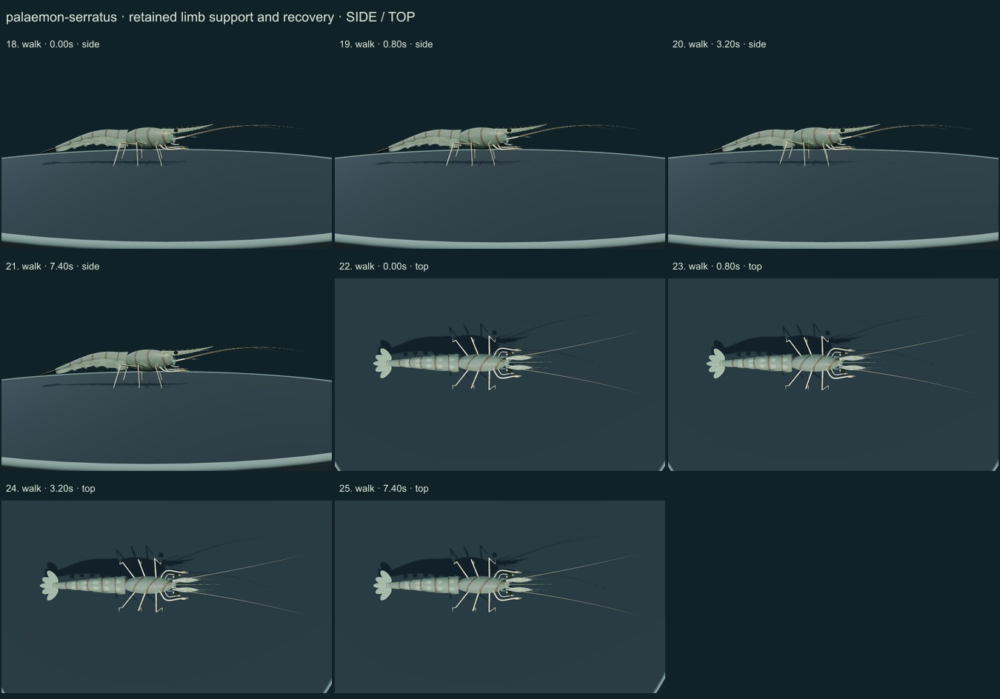

PhenoVoxel Archive · v0.6.22 · October 25, 2026
Common prawn
This release reaches 270 records after verified publication. 30 saved drafts remain held; 280 remain to 550, including 250 without saved drafts. Release register.
Authentic Roberto Pillon (Etrusko25) public-domain photograph compared with selected actual Naturalis diagnosis and FAO PDFpage12/printed239 whole profile, rostrum, P2 and antennular drawings. Naturalis and FAO give different tooth ranges; variable dentition is disclosed rather than treating one count as universal. No related Palaemon species gait data are fitted.
Roberto Pillon (Etrusko25) · Public domain. Authentic Roberto Pillon public-domain photo source labels Palaemon serratus in Croatia and shows two live prawns. Lighting and selected pigmentation do not calibrate transparency or dimensions; rostral dentition, source identity and sex are not independently redetermined. Resized inside 1000 px, flattened and JPEG encoded; no generative alteration.
Exact creators, licenses, source/download/local checksums and access scopes remain in the data. Primary figures are linked, not redistributed.
Original laterally compressed carapace and continuous tapered six-somite abdomen replace the untextured repeated rounded segments. The selected upward-curved rostrum has posterior tooth cues, a distal dorsal gap and bifid-tip cue; second pleural plates overlap the adjacent regions. Two anterior small chelate pairs, with P2 larger than P1, precede three posterior main support pairs. Separate scaphocerites, three antennular flagellar cues, five simple pleopod pairs and a narrow telson with four uropodal lobes are retained.
Original subdued grey-green cuticle, oblique cephalic and vertical abdominal brown bands and limited semitransparency. No source photograph pixels or measured tissue-optics calibration. The continuous cuticle deforms over the existing articulated joints; it does not exchange models between actions.
Remaining: Still partly stylized: transparency, pale overlap regions, fine chromatophore layout, ventral/mouthpart anatomy, fan setae/rays and detailed limb segmentation are incomplete. The selected rostrum and overall proportions are unmeasured. Close diagnostic views deliberately crop some distal antenna/tail portions; neutral views retain the whole organism. No independent taxonomic redetermination or biological validation.
A short authored support/recovery bout holds planted toes and fixed segment lengths, then settles. Small anterior-claw and antenna gestures, simple pleopod strokes, mild local tail/fan flex and supported rest use the same meshes. Full escape, actual swimming, feeding contact, sensory physiology, forces and measured gait timing are not implemented.
Partly stylized original educational reconstructions. Proportions, natural cuticle optics, biological timing, forces, food contact, sensing and physiology are incomplete or unmeasured. No independent specialist validation, scientific certification or accuracy percentage. Software checks and screenshots are not empirical validation.
55 actual nonblank final viewer states individually inspected on 7 labelled sheets. Neutral full-organism and enlarged diagnostic views distinguished. Qualitative author assessment, not independent scientist certification.







Partly stylized original educational reconstructions. Proportions, natural cuticle optics, biological timing, forces, food contact, sensing and physiology are incomplete or unmeasured. No independent specialist validation, scientific certification or accuracy percentage. Software checks and screenshots are not empirical validation. Prior 267 species objects and original wolf/tiger meshes are unchanged. Legacy Protista/Monera reporting categories are not monophyletic kingdoms. Occurrence records are not native-range boundaries.
Exact findings, sources and screenshot hashes